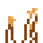
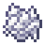
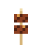
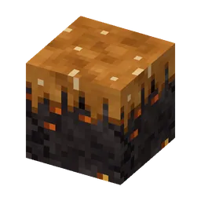

Een burcht van houtskoolsteen met lange bruggen, Vonk-Mika's en een pindasaus-tuintje (Barbecuether)
SpiesburchtBarbecuetherBarbecuether
The fortress of the Barbecuether, with long bridges, a pindasaus garden and a Vonk-Mika spawner.Het fort van de Barbecuether, met lange bruggen, een pindasaus-tuintje en een Vonk-Mika-spawner.
Spiesburcht
The fortress of the Barbecuether (121×66×121): a castle of houtskoolsteen stones on the height where the cave is most open. Giant guh faces with gloeikool eyes on all four sides, corner towers with Mika heads, a hall with saté pillars and fire bowls, a pindasaus garden in the open courtyard (with a guh scarecrow) and four long bridges on arches down into the sauce, with brug towers and a Vonk-Mika spawner. Vonk-, Knekel- and Nether-Mikas spawn inside. Super compass: Barbecue > Spiesburcht.
Het fort van de Barbecuether (121×66×121): een burcht van houtskoolsteen stenen op de hoogte waar de grot het meest open is. Reusachtige guhgezichten met gloeikool-ogen aan alle vier de kanten, hoektorentjes met Mika-koppen, een hal met satépilaren en vuurschalen, een pindasaus-tuintje op de open binnenplaats (met een guh-vogelverschrikker) en vier lange bruggen op bogen tot in de saus, met brugtorens en een Vonk-Mika-spawner. Binnen spawnen Vonk-, Knekel- en Nether-Mika's. Superkompas: Barbecue > Spiesburcht.
LootBuit
| ItemVoorwerp | CountAantal | ChanceKans |
|---|---|---|
| 4–12 | oftenvaak | |
 Pindascheutjes | 2–6 | oftenvaak |
| 1–4 | oftenvaak | |
 Beendermeel | 2–6 | oftenvaak |
 Satézwammetje | 1–3 | sometimessoms |
| 1–3 | sometimessoms | |
| 1–5 | sometimessoms | |
| 1–6 | sometimessoms | |
| 1–4 | sometimessoms | |
 Pindasaus-nylium | 1–3 | sometimessoms |
| 2–4 | sometimessoms | |
| 1–3 | sometimessoms | |
| 1 | sometimessoms | |
| 1 | sometimessoms | |
| 1 | sometimessoms | |
| 1 | rarelyzelden | |
| 1–2 | rarelyzelden | |
| Golden horse armor | 1 | rarelyzelden |
| 1–2 | rarelyzelden | |
| 1 | rarelyzelden |